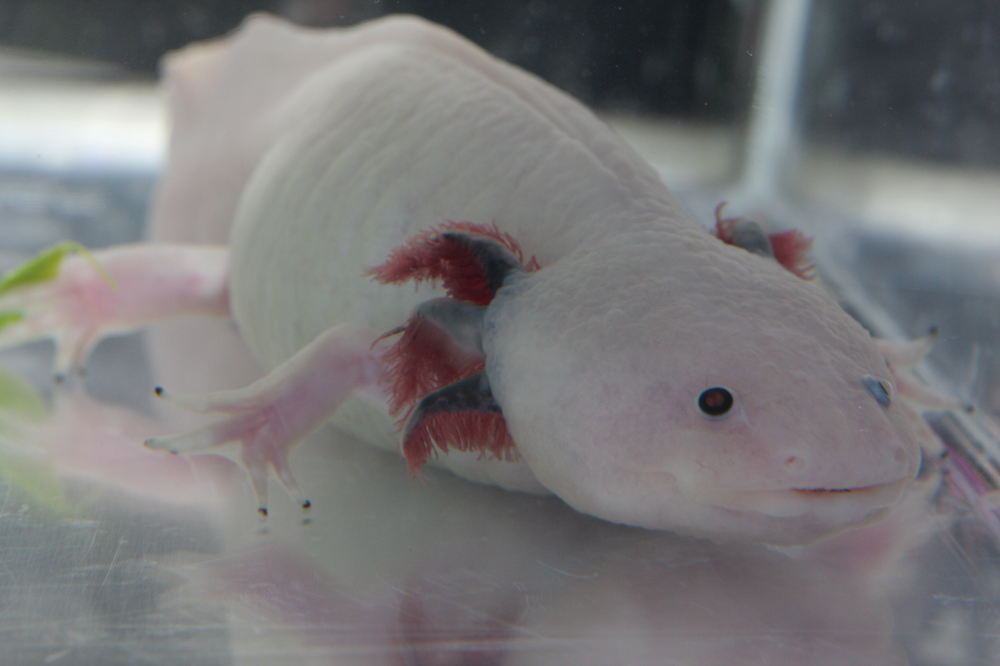
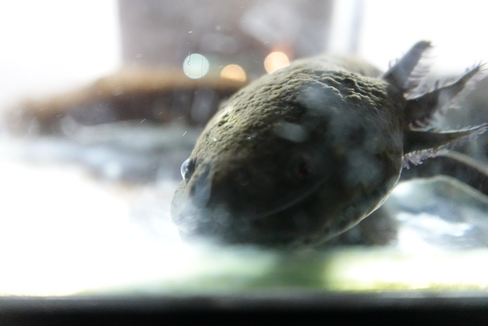

A Mateo le encantan los ajolotes desde que tenía 8 años. Nació en Madrid y a los 10 años (¡ahora!) hizo una presentación en Google con los 33 tipos de ajolotes que existen. ¡Menudo experto!
Antes de descubrir los ajolotes, su animal favorito era el panda 🐼, pero todo cambió cuando conoció a estas criaturas sonrientes. Su tipo favorito de ajolote es el leucístico , el adorable ajolote rosado con ojos oscuros.
De mayor le encantaría tener un ajolote, pero sabe que no podría por el clima y porque están en peligro de extinción 🔴. Así que se conforma con verlos nadar y aprender todo sobre ellos.
Al final, junto con su padre, creó esta fascinante web para que sepas casi tanto como él. 🚀
El ajolote (Ambystoma mexicanum) es una criatura mágica que vive en el agua. A diferencia de otros anfibios, el ajolote nunca crece del todo: se queda en su forma de larva para siempre, conservando sus increíbles branquias externas que parecen una corona de plumas. ¡Es como si fuera un Pokémon que decide no evolucionar! 🎮
Son originarios de México y están considerados uno de los animales más fascinantes del planeta. ¡Y tienen un superpoder increíble: pueden regenerar partes de su cuerpo!
¡Pulsa sobre cada ajolote para descubrir más, Mateo!
Pueden llegar a medir hasta 45 cm de largo, aunque lo normal es entre 15 y 30 cm.
En cautividad pueden vivir hasta 15 años si se les cuida bien.
Prefieren el agua fresquita. ¡El calor excesivo les estresa!
Pueden regenerar extremidades, corazón, cerebro y médula espinal. ¡Son superhéroes!
Una hembra puede poner entre 100 y 1000 huevos de una sola vez.
Respiran por branquias, pulmones y a través de la piel. ¡Triple combo!
El hogar original del ajolote mexicano es el sistema de canales de Xochimilco, en la Ciudad de México. Estos canales son los restos del antiguo lago que los aztecas usaban para construir sus famosas chinampas (islas flotantes para agricultura).
Los ajolotes adoran esconderse entre las plantas acuáticas. Las hembras depositan sus huevos en las plantas y estas les proporcionan refugio contra depredadores. Las plantas también ayudan a mantener el agua limpia y oxigenada.
Los ajolotes son animales nocturnos. Durante el día se esconden en el fondo del lago entre las rocas y plantas, y por la noche salen a cazar. Se alimentan de pequeños peces, insectos, gusanos y crustáceos.
Tristemente, el ajolote está en peligro crítico de extinción. La contaminación del agua, la urbanización de la Ciudad de México y las especies invasoras (como la tilapia y la carpa) han destruido gran parte de su hábitat natural.
Explora el mapa para ver dónde se encuentran los ajolotes en el mundo
¡Entra en sus hábitats, acuarios y laboratorios para ver ajolotes de verdad!
Ciudad de México, México
Buceando con ajolotes en los canales de Xochimilco. ¡Mira cómo nadan en su hábitat natural, entre las plantas acuáticas!
Lago de Xochimilco
Documental sobre los esfuerzos para salvar a los ajolotes en los canales de Xochimilco. ¡Ajolotes silvestres nadando bajo el agua!
Xochimilco, México
¡Buenas noticias! Se han encontrado ajolotes en el lago, calmando los temores de extinción. ¡Míralos nadar!
Acuario
Un ajolote simpático nadando y posándose en la mano de su cuidador. ¡Mira lo adorable y amigable que es!
Acuario doméstico
Mira un ajolote mexicano nadando tranquilamente en su acuario. ¡Observa sus branquias moverse y su cara sonriente!
Cuidados y acuario
Descubre cómo montar el acuario perfecto para un ajolote. ¡Mira cómo explora su nuevo hogar!
Marine Biological Laboratory, EEUU
Dentro de un laboratorio real con ajolotes. ¡Mira cómo los científicos estudian su increíble poder de regeneración!
Universidad de Harvard, EEUU
La investigadora Jessica Whited de Harvard explica cómo los ajolotes regeneran sus patas. ¡Ciencia increíble con ajolotes reales!
Instituto Max Planck, Alemania
La científica Elly Tanaka muestra cómo estudian la regeneración de extremidades en ajolotes en su laboratorio.
Su nombre viene del náhuatl "atl" (agua) y "xolotl" (monstruo). ¡Literalmente significa "monstruo de agua"! El dios Xólotl se transformó en ajolote para escapar de ser sacrificado. 🏛️
Pueden regenerar extremidades completas, parte de su corazón, ojos, médula espinal e incluso partes del cerebro. Los científicos los estudian para intentar aplicar su capacidad regenerativa en medicina humana. 🦸
Los ajolotes exhiben neotenia: mantienen sus características larvales toda la vida. ¡Nunca hacen la metamorfosis completa como otros anfibios! Es como si decidieran ser niños para siempre. 🧒
Su boca tiene una forma natural que parece una sonrisa permanente. ¡Por eso son tan adorables y se han convertido en uno de los animales favoritos de internet! 😊
Los ajolotes aparecen en Minecraft como mascotas acuáticas que te ayudan a luchar contra mobs hostiles. También hay Pokémon inspirados en ellos, como Wooper y Mudkip. 🎮
En México, el ajolote aparece en el billete de 50 pesos que se empezó a usar en 2022. ¡Es tan importante para México que lo pusieron en su dinero! 💵
Los ajolotes no mastican: aspiran su comida creando un vacío con su boca. Abren la boca tan rápido que la presa es succionada hacia dentro junto con el agua. ¡Ñam! 🌪️
Los ajolotes GFP (Green Fluorescent Protein) han sido modificados genéticamente y brillan de color verde bajo luz ultravioleta. ¡Como si fueran alienígenas! 👽
100+ preguntas con fotos, unir parejas, juegos rápidos y más. ¿Cuántos niveles puedes superar?
¡Dibuja tu propio ajolote y guárdalo en el Museo Ajolotil!
Tu galería personal de obras maestras ajolotiles
¡Ajolotes kawaii para los más pequeños!
Los ajolotes tienen la boca en forma de sonrisa. ¡Parece que siempre están contentos!
Los ajolotes más famosos son de color rosa con branquias como plumitas. ¡Son super monos!
Los ajolotes viven siempre en el agua. ¡Nunca salen a la tierra! Son como pececitos con patitas.
Si pierden una patita, ¡les crece otra nueva! Son los superhéroes del mundo animal.
Viven en unos lagos especiales de México 🇲🇽, un país muy bonito de América.
Les encantan los gusanitos y los bichitos pequeños del agua. ¡Ñam ñam!
Los ajolotes prefieren la noche para jugar y buscar comida. ¡Son nocturnos!
Los ajolotes nunca se hacen mayores del todo. ¡Se quedan como bebés para siempre!
¡Cada uno es especial y diferente!


¡Para los exploradores más pequeños!